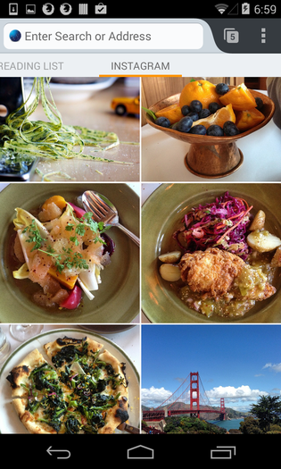
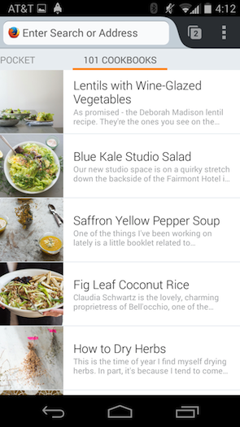

Firefox for Android 首頁一般均供使用者找到自己最常用的網站、書籤、瀏覽記錄等，而附加元件可透過 Firefox Hub API 在 Firefox for Android 首頁上新增面板。這些 API 已於 Firefox 30 中登場，更在 Firefox 31 與 32 時添增了更多功能並修復錯誤。現可至 addons.mozilla.org 找到其中幾款附加元件，另可透過 github 上的範例程式碼協助自己入門。


概述
Firefox Hub 附加元件的開發作業主要可分為 1). 建構首頁面板，以及 2). 儲存資料以顯示於面板上。首頁面板是由不同的視圖 (View) 所組成，而各視圖呈現的資料均取自於已儲存的資料集。
建立新的首頁面板
要建立首頁面板，必須先透過 Home.panels API 註冊面板。這裡需要一組面板識別碼，以及一組用以回傳設定值的回呼函式 (Options callback) 作為註冊 API 的參數。不論是安裝或更新面板，都將呼叫此回呼函式並動態產生一組設定值物件，如此即可支援動態切換語系。
function optionsCallback() {
return {
title: "My Panel",
views: [{
type: Home.panels.View.LIST,
dataset: "my.dataset@mydomain.org"
}]
};
}
Home.panels.register("my.panel@mydomain.org", optionsCallback);
1234567891011
function optionsCallback() { return { title: "My Panel", views: [{ type: Home.panels.View.LIST, dataset: "my.dataset@mydomain.org" }] };} Home.panels.register("my.panel@mydomain.org", optionsCallback);
任何起始頁上的現有面板都需要註冊。若是第一次要讓面板實際出現在使用者的首頁上 (例如剛安裝了附加元件時)，還必須明確呼叫安裝函式，以順利安裝面板。
Home.panels.install("my.panel@mydomain.org");
1
Home.panels.install("my.panel@mydomain.org");
另可修改上述的回呼函式，以自訂面板顯示資料的方式。舉例來說，你可選擇要以網格或清單的方式顯示資料；在無資料時，可自訂所要顯示的視圖；在使用者點選項目之一時，可啟動「intent (於 Android 內使用，可呼叫不同 App 的協定)」。
儲存面板的資料
若要在新的首頁面板顯示圖像，就必須透過 HomeProvider API 儲存資料。此 API 可非同步儲存或刪除資料；亦可註冊回呼，以利瀏覽器定期同步你的資料。
HomeProvider API 亦可讓開發者存取 HomeStorage 物件，以從既有的資料集內儲存或刪除資料。這些函式均是為了搭配 Task.jsm 所設計，可於工作 (Task) 中執行非同步交易 (Asynchronous transaction)。
let storage = HomeProvider.getStorage("my.dataset@mydomain.org");
Task.spawn(function() {
yield storage.save(items);
}).then(null, Cu.reportError);
1234
let storage = HomeProvider.getStorage("my.dataset@mydomain.org");Task.spawn(function() { yield storage.save(items);}).then(null, Cu.reportError);
Firefox 31 則擴充了儲存 API，可支援現有資料的取代作業，以定期重新整理開發者的資料集。
function refreshDataset() {
let items = fetchItems();
Task.spawn(function() {
yield storage.save(items, { replace: true });
}).then(null, Cu.reportError);
}
HomeProvider.addPeriodicSync("my.dataset@mydomain.org", 3600,
refreshDataset);
123456789
function refreshDataset() { let items = fetchItems(); Task.spawn(function() { yield storage.save(items, { replace: true }); }).then(null, Cu.reportError);} HomeProvider.addPeriodicSync("my.dataset@mydomain.org", 3600, refreshDataset);
此程式碼片段可確實每隔 3600 秒 (亦即 1 小時) 重新整理資料集一次。
Firefox 32 測試版 (Beta) 的新功能
Firefox 32 除了修復錯誤之外，另針對 Firefox Hub API 集合而新增多項功能。
Refresh 處理器
除了可定期更新資料之外，現亦新支援「下拉以重新整理資料 (Pull to refresh)」，讓使用者能手動更新面板資料。只要將 onrefresh 屬性加到視圖的定義 (Declaration) 之中，即可使用此功能。
function optionsCallback() {
return {
title: "My Panel",
views: [{
type: Home.panels.View.LIST,
dataset: "my.dataset@mydomain.org",
onrefresh: refreshDataset
}]
};
}
12345678910
function optionsCallback() { return { title: "My Panel", views: [{ type: Home.panels.View.LIST, dataset: "my.dataset@mydomain.org", onrefresh: refreshDataset }] };}
在添增這行程式碼之後，只要下拉面板就會觸發更新指示器 (Refresh indicator) 並呼叫 refreshDataset 函式。在針對該資料集做出 save 呼叫之後，更新指示器隨即消失。
認證視圖
Mozilla 另新支援了認證 (Authentication) 視圖，讓附加元件能更輕鬆使用需認證的資料。此視圖另為文字與圖像保留了空間，並有按鈕可觸發認證流程。只要將 auth 屬性添增到面板的定義之中，即可使用此功能。
function optionsCallback() {
return {
title: "My Panel",
views: [{
type: Home.panels.View.LIST,
dataset: "my.dataset@mydomain.org"
}],
auth: {
authenticate: function authenticate() {
// … do some stuff to authenticate the user …
Home.panels.setAuthenticated("my.panel@mydomain.org", true);
},
messageText: "Please log in to see your data",
buttonText: "Log in"
}
};
}
1234567891011121314151617
function optionsCallback() { return { title: "My Panel", views: [{ type: Home.panels.View.LIST, dataset: "my.dataset@mydomain.org" }], auth: { authenticate: function authenticate() { // … do some stuff to authenticate the user … Home.panels.setAuthenticated("my.panel@mydomain.org", true); }, messageText: "Please log in to see your data", buttonText: "Log in" } };}
依預設值，只要首次安裝面板之後，隨即就會出現認證視圖。且只要使用者按下視圖中的按鈕，就會呼叫認證函式。你可決定在使用者成功完成認證流程之後，呼叫 setAuthenticated(true)；或在使用者變成未認證的狀態 (如登出) 時，呼叫 setAuthenticated(false)。在 App 執行期間，此認證狀態均將保持不變。開發者另可依自己需要而重設該狀態。
未來規劃
我們已經在規劃擴充這些 API，也希望能得到大家的想法與意見！我們也在尋找能新加入Firefox for Android 的貢獻者，能從撰寫修正檔入門最好！